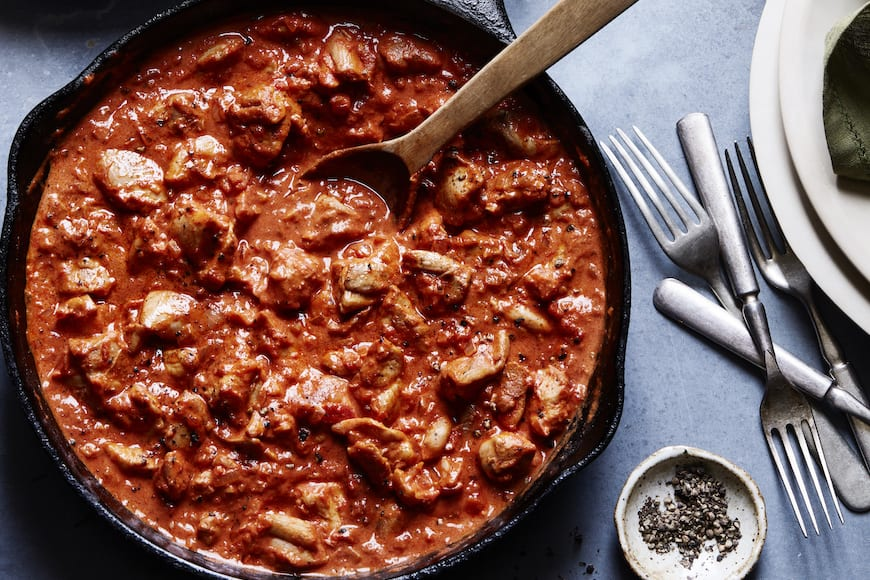

The Vision's Paprikash
Description
Chicken paprikash is a popular dish of Hungarian origin, whose name is derived from the ample use of paprika. Wanda Maximoff, the Scarlet Witch in the Marvel Cinematic Universe, is actually from Sokovia, a fictional location supposed to be in Eastern Europe, pretty close to Hungary IRL.
And so Vision cooks paprikash for her, to ‘lift her spirit’, in Captain America: Civil War (Click here to watch the scene!). That was before Thanos and the Blip, before Westview and Agatha, before the Darkhold...
Let's cook paprikash in hope it'll lift our spirits too!

Ingredients
- 2 plum tomatoes
- 1 Italian frying pepper
- 1 yellow onion
- 1/4 cup canola oil
- 1 (3-4 lb.) chicken
- salt
- pepper
- 3 tbsp Hungarian sweet paprika
- 2 cups chicken stock
- 1/2 cup sour cream
Steps
- Warm oil in a large, deep pot over medium-high heat
- Add chicken to pot, seasoning with salt and pepper
- Cook chicken until browned (about 8-10 minutes)
- Transfer chicken to plate, and set aside
- Wash and seed tomatoes and pepper, and cut into 1-inch pieces. Mince onion
- Cook onion in pan and stir occasionally until soft (about 8 minutes)
- Add paprika and stir (about 2 minutes)
- Return chicken and its juices to the pan. Add stock, tomatoes, and pepper
- Bring to a boil, then reduce heat to medium low and simmer until chicken is cooked (about 30 minutes)
- Ladle soup into bowls. Top with sour cream and another pinch of paprika
- Serve with rice, egg noodles, or dumplings
Recipe from CookFiction